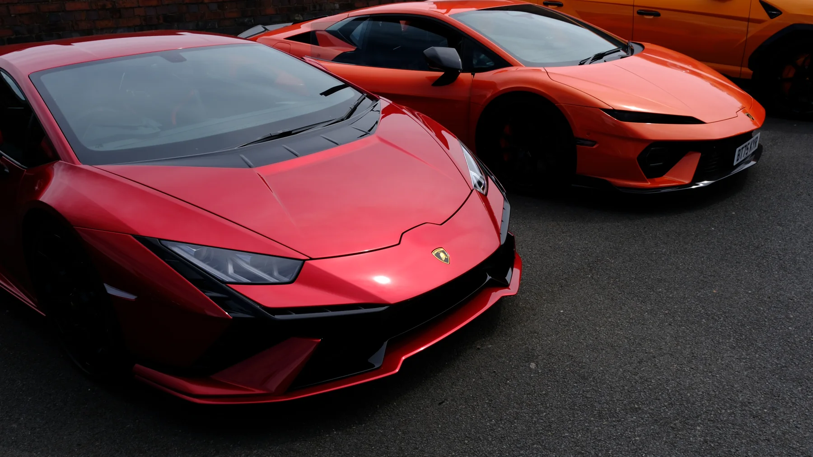
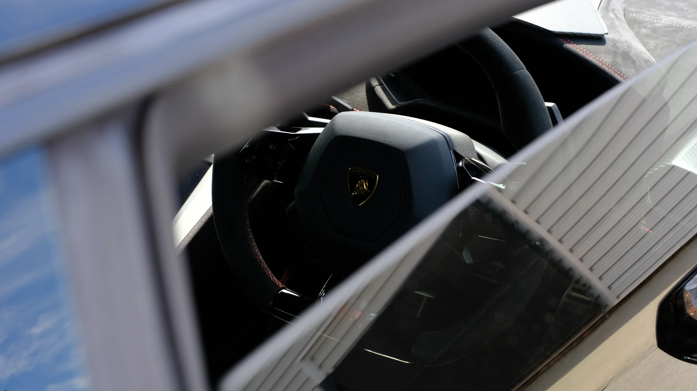
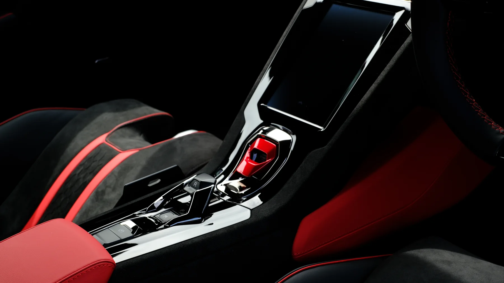
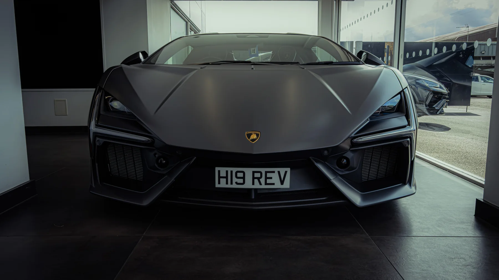
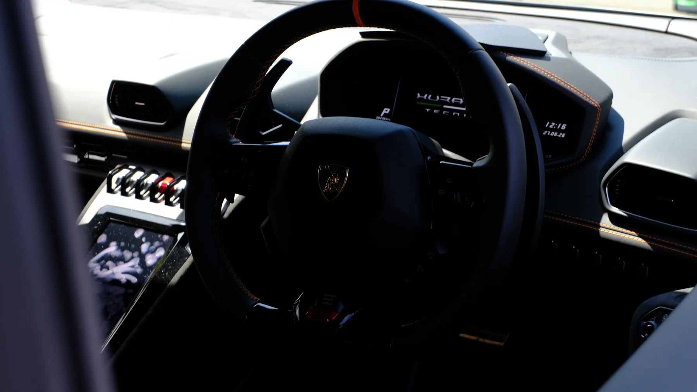
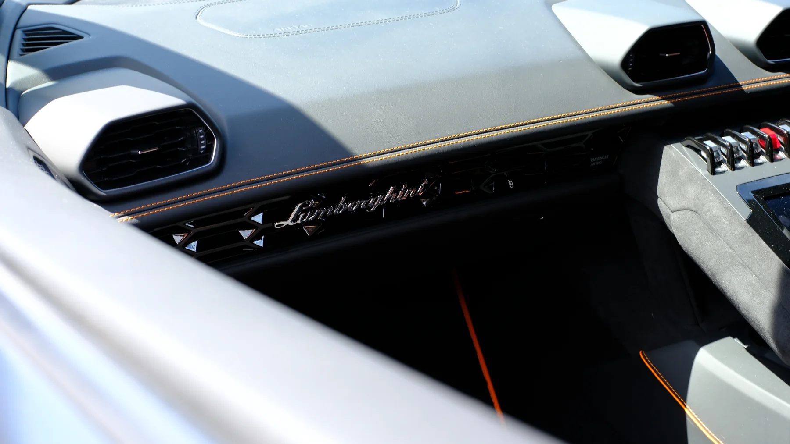
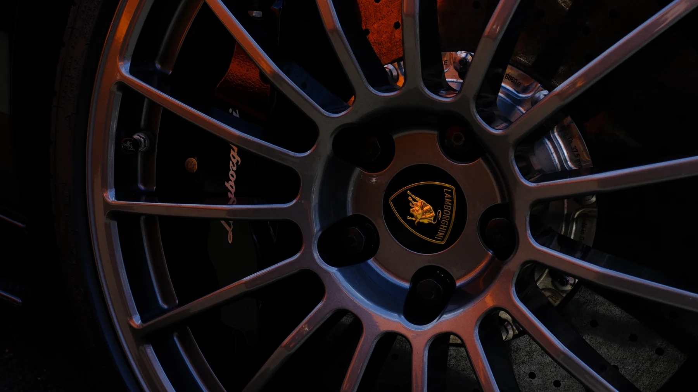
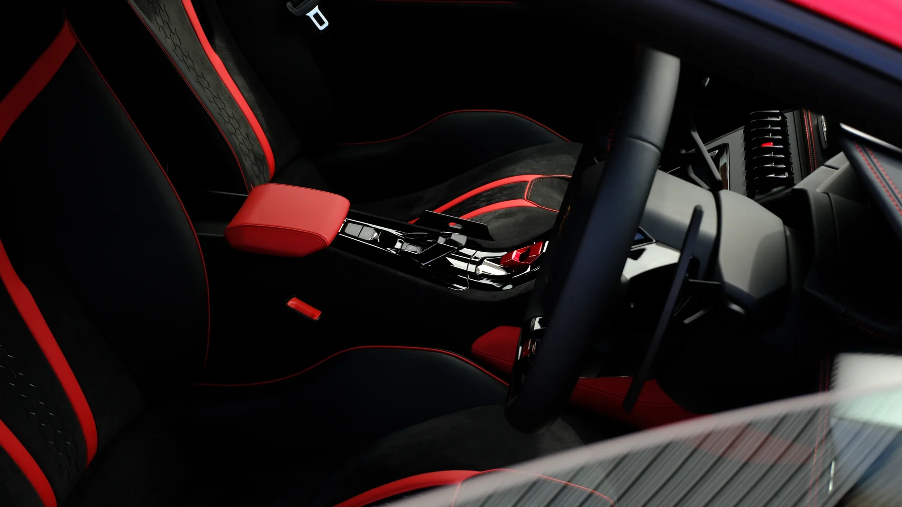
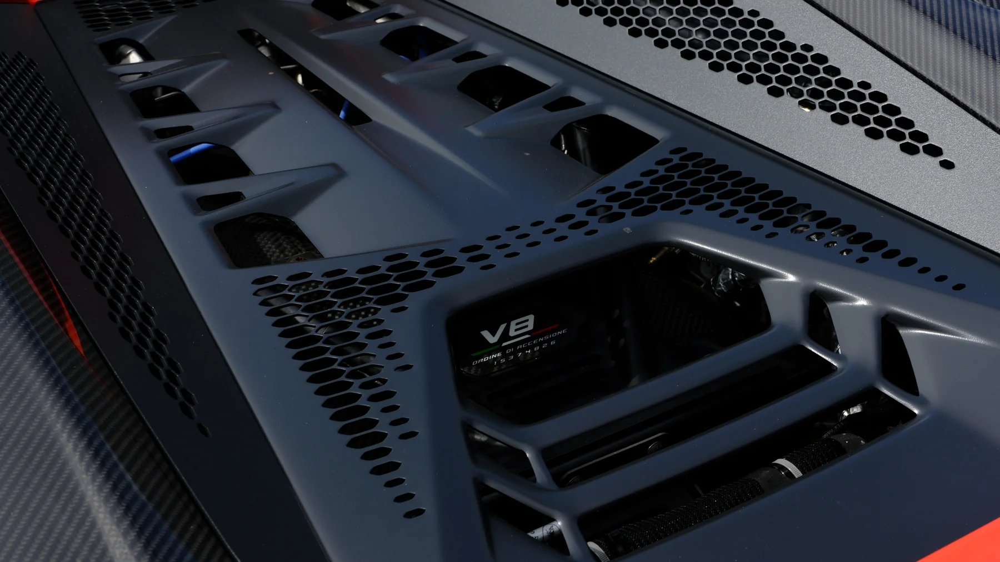

Back to projects
Auto Photography
4 Wheel Wonders
Automotive details, interiors, colour, and bodywork captured with a premium editorial feel for portfolio features, social posts, and brand-ready visuals.

Gallery
Automotive Frames
Selected images from shoots focused on sharp lines, interiors, and high-end vehicle details.








More Projects